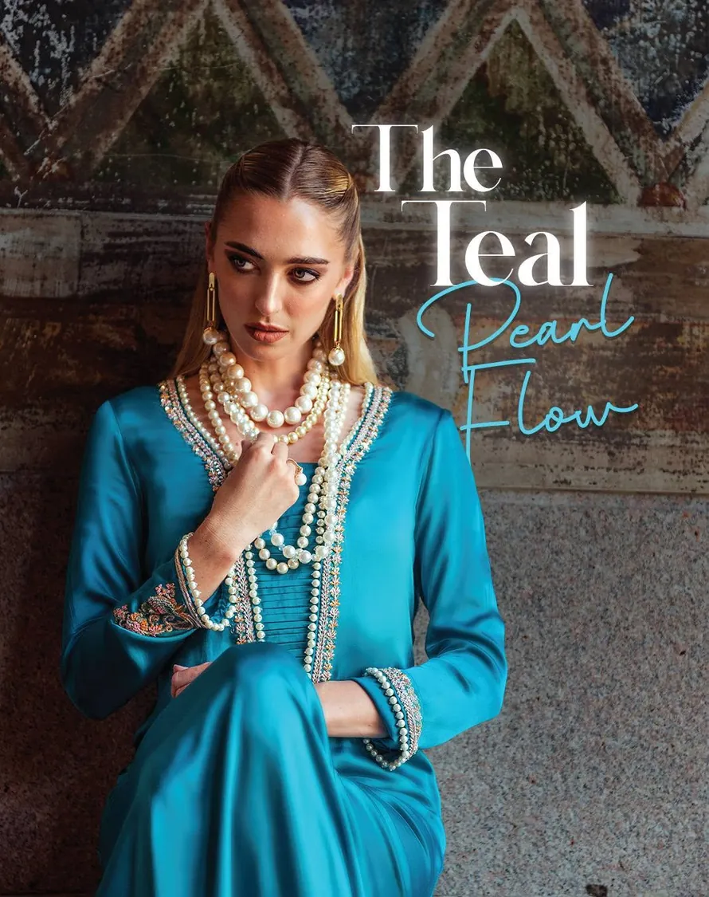
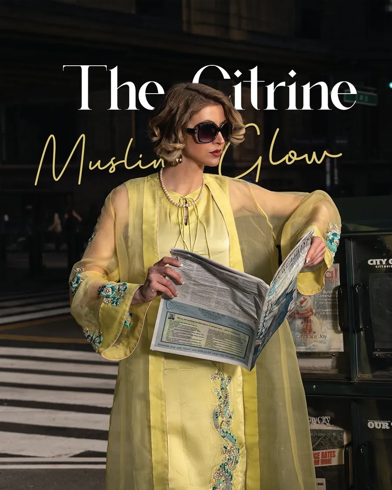
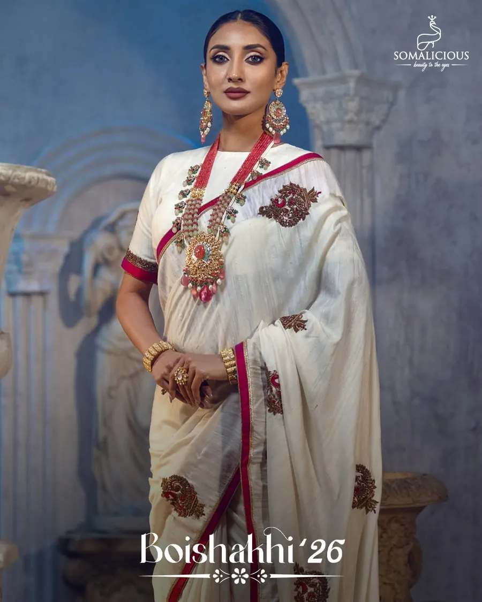
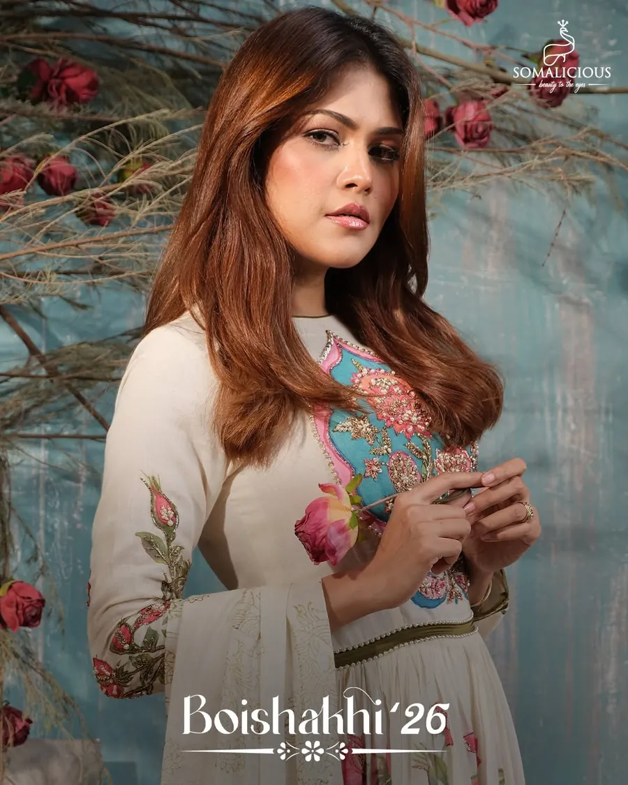
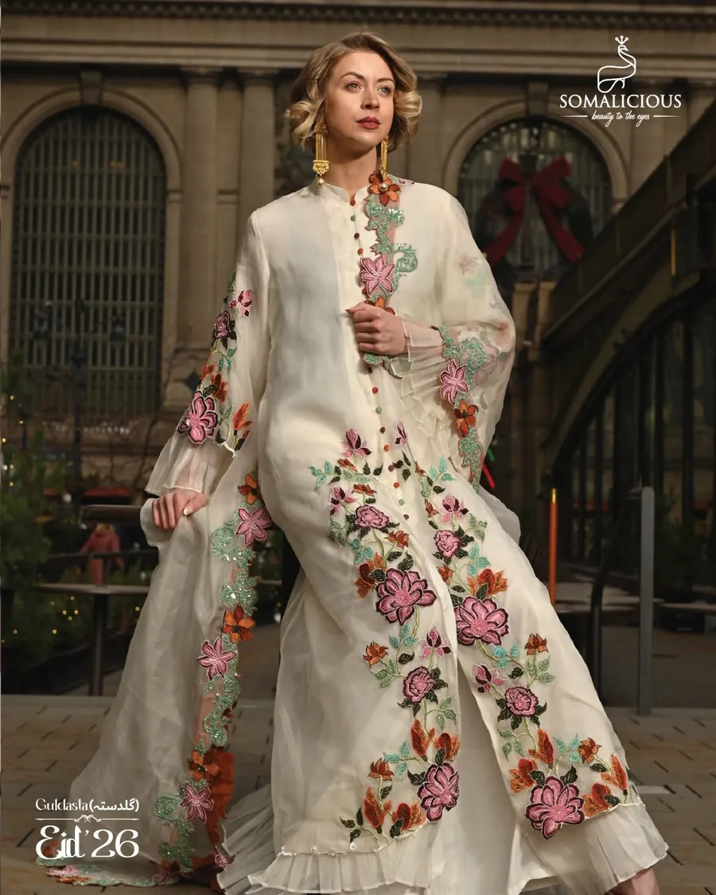
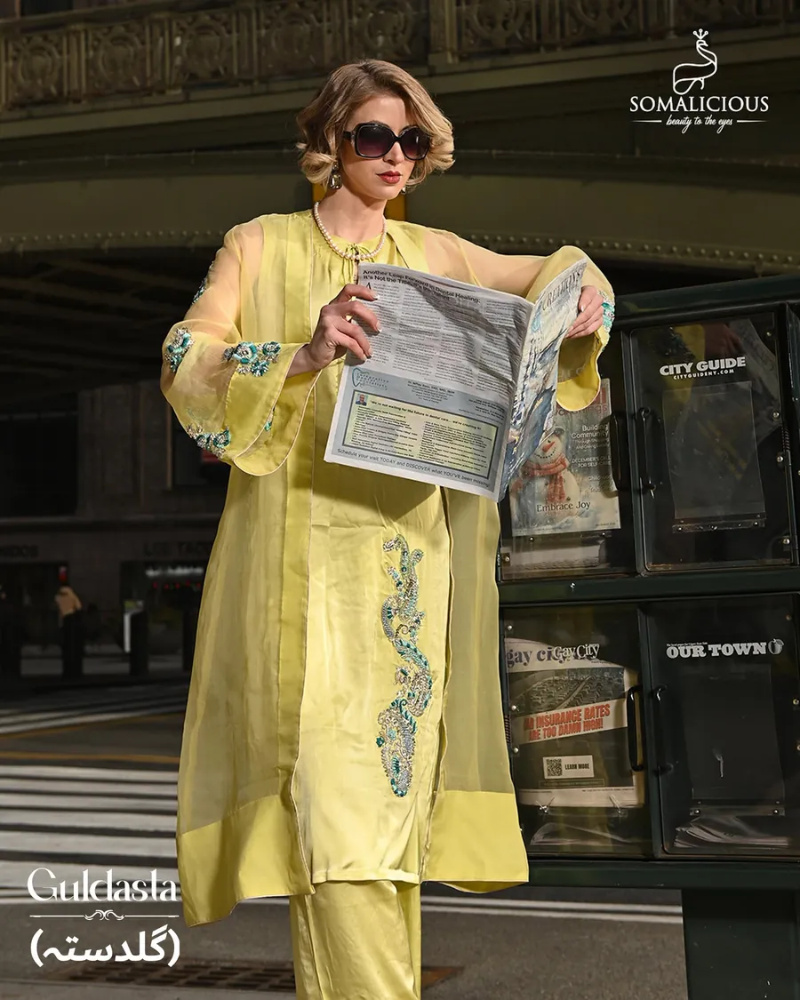

Somalicious · Brand · Social Media
হাতে তৈরি পোশাক, নিজস্ব Brand Voice
ঢাকায় হাতে তৈরি পোশাক বানায় Somalicious। Social Media-তে Premium অনুভূতি চাই, কিন্তু ধরাছোঁয়ার বাইরে মনে হওয়া চলবে না। আগে সেই Brand Voice তৈরি করেছি, তারপর তার সঙ্গে মিলিয়ে বাকি Content।
একনজরে
- এক কথায় Brand-এর গল্প: যত্নে তৈরি, আত্মবিশ্বাসে পরা।
- Voice Guide, Script, Storyboard ও Photo Brief: সব এক System-এ।
- Facebook ও Instagram-এর Reel, Carousel আর Story-র জন্য Content।
- Client
- Somalicious
- অবস্থান
- ঢাকা, বাংলাদেশ
- খাত
- Fashion ও Lifestyle
- কাজ
- Brand Copy, Script, Storyboard, Photography Direction






সমস্যা যেখানে
বাংলাদেশের Fashion Content প্রায়ই দুই পথে হাঁটে: ধার করা Western Look, নয়তো সাদামাটা Product Photo। কোনোটিতেই Premium ভাব বা Somalicious-এর নিজস্ব পরিচয় ফুটছিল না।
ভিড়ে ঠাসা Fast-fashion বাজারে নিজের দামের কারণ বোঝাতে দরকার ছিল নিজস্ব উপস্থিতি: Editorial Look, আকাঙ্ক্ষা তৈরি করার ক্ষমতা, আর স্থানীয় সংস্কৃতির সঙ্গে যোগ।
পরিকল্পনা যা ছিল
Brand-এর শক্তিটাই সামনে আনা: হাতের কাজের সঙ্গে Modern Style।
- Voice Guide: আত্মবিশ্বাসী, সংযত, একটু কাব্যিক। সঙ্গে কোন শব্দ ব্যবহার হবে, কোনটি বাদ যাবে।
- Video-তে আগে তৈরির গল্প: হাতের কাজ, কাপড় আর খুঁটিনাটি। তারপর পুরো পোশাক।
- Photo Brief-এ মুখের চেয়ে Texture, আলো আর পরিবেশকে গুরুত্ব। মূল আকর্ষণ পোশাকই।
আমি যা করেছি
- Tagline, About Copy ও Product Description Template।
- Launch Reel ও Brand Intro Video-র Script এবং Storyboard।
- Launch ও বিভিন্ন উপলক্ষে Facebook ও Instagram-এর Caption।
- Photography Direction: Background, আলো, Styling ও Props।
- হাতের কাজ কাছ থেকে দেখানোর Carousel ও Story-র ভাবনা।
ফল যেমন হয়েছে
Posting Client নিজেই পরিচালনা করতেন। Analytics তাই তাঁদের কাছেই আছে।